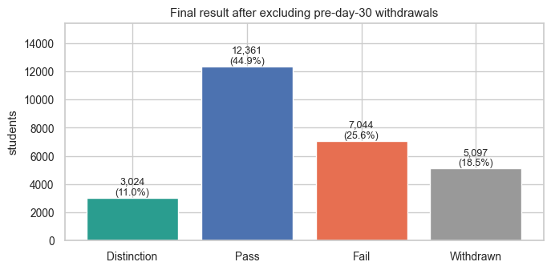
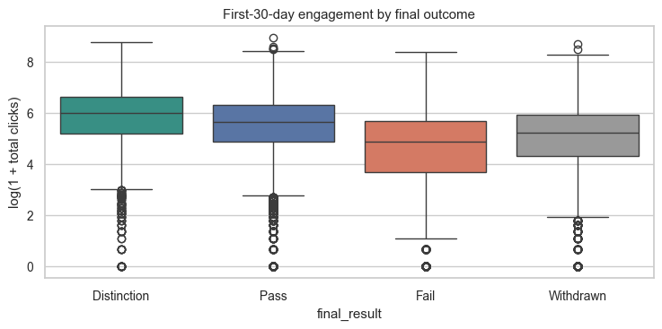
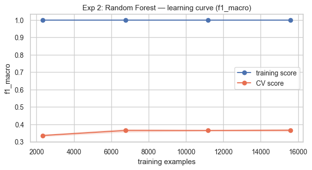
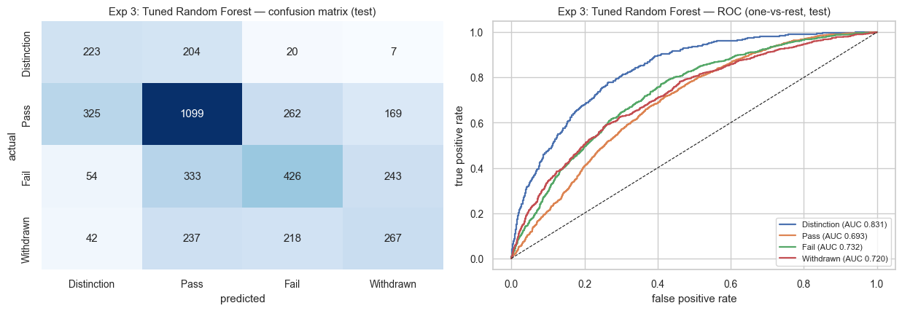
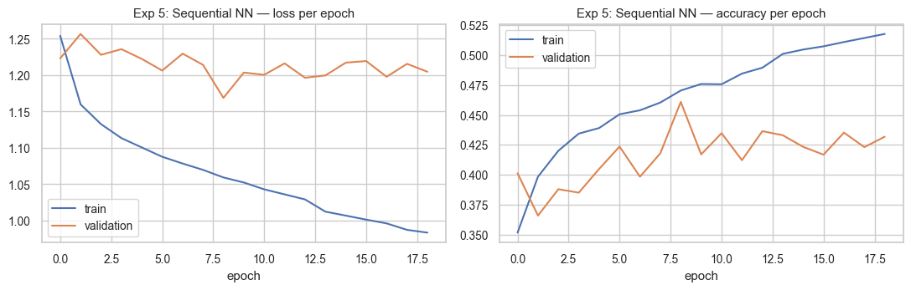
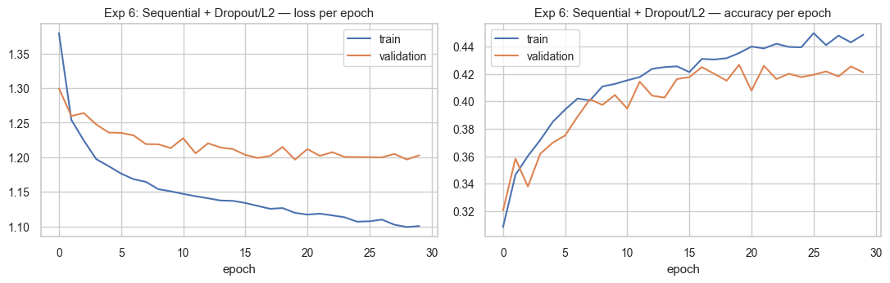
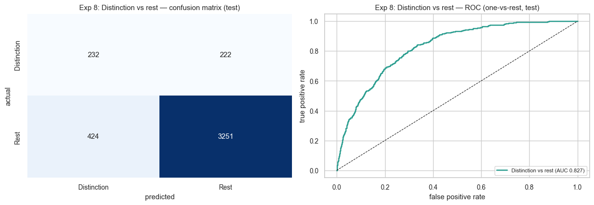

Can the first 30 days of observable engagement identify students likely to earn a Distinction, while there is still time for a teacher to act?


Students who later earned Distinction were more engaged on average. But the boxes overlap heavily, so early behaviour can rank students, not perfectly determine their future.
Set a class balanced linear baseline.
Add nonlinearity and feature interactions.
Control tree depth and reduce variance.
Test synthetic oversampling for Distinction.
Observe what an unregularized network does.
Treat the overfitting from Experiment 5.
Separate behaviour from demographics.
Ask the mission question directly.

The flat training score at one and much lower cross validation score show severe variance. Grid search selected depth 12, leaf size 4, and half the features per split.



Two dense hidden layers, class weights, and early stopping.
Behaviour and demographics used separate branches before fusion.
The two branch model matched the regularized network with roughly one third of the parameters, but neither beat the tuned forest’s macro F1.

A model that always predicts “not Distinction” would score about 89% accuracy. That is why the 84% accuracy is not evidence of success.
At day 30, both groups can look engaged and capable. The difference may not exist clearly in the data yet.
Withdrawal can be caused by work, illness, family, or finances, which the clickstream cannot observe.
About 19% of rows come from students with more than one course record. A stronger split should keep each student in only one partition.
The same test set was scored across all experiments. Future model selection should use validation, then open the final test set once.
The data is from UK distance learners in 2013 and 2014. The method may transfer, but the trained weights should not be assumed to.
A real system should include an uncertain review band instead of forcing every student into a confident answer.
First month behaviour carried more useful signal than demographic background.
A tuned random forest was simpler, cheaper, and at least as effective as the neural networks.
A calibrated probability, an adjustable threshold, and an uncertain review band for teacher follow up.
The same idea could use attendance, homework timing, participation, library use, or laboratory activity. The observable behaviour changes, but the early identification question stays the same.
“A flag is an invitation to pay attention, not a verdict about a student.”
Pass is the largest class, and Distinction is rare. A model can gain accuracy by mostly predicting common classes while missing the students I care about.
It calculates the F1 score for each class and gives every class equal weight. Distinction therefore cannot disappear behind the much larger Pass class.
It measures how well the model ranks positive examples above negative ones across many thresholds. A value of 0.5 is random and one is perfect.
The raw forest gained accuracy by favoring common classes. Tuning reduced memorization and allowed class weights to influence decisions, so it found more Distinction students.
Distinction and Pass overlap heavily. Synthetic Distinction points were probably created inside that overlap, so resampling did not create a cleaner boundary.
This is medium sized tabular data with engineered features. Tree models are often very strong in that setting because they handle irregular interactions naturally.
They reduced overfitting. Training improved more slowly, but validation stayed closer instead of getting worse while training kept improving.
The heatmap showed behaviour and demographics were mostly separate feature groups. The Functional API let each group learn through its own branch before combining them.
Because predicting every student as not Distinction would score about 89%. The useful evidence is its ranking ability and Distinction recall.
I would split by student, keep the final test set locked, calibrate probabilities, and choose the threshold using a real school’s review capacity.
This slide is hidden from normal navigation. Press Q to close it.